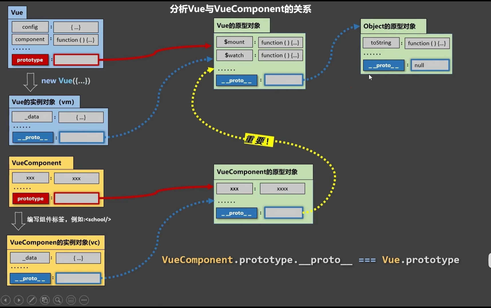
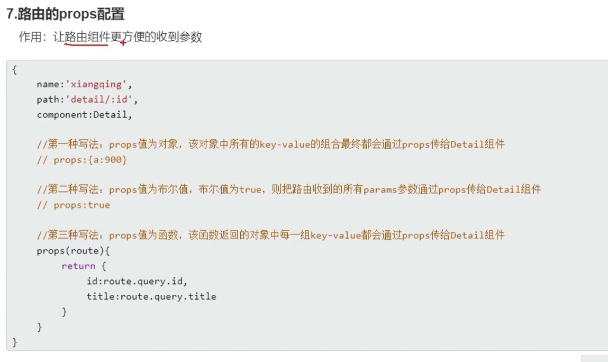
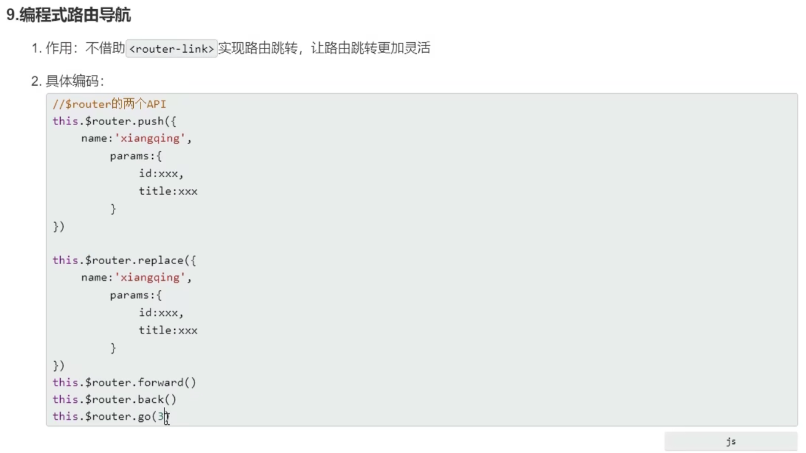
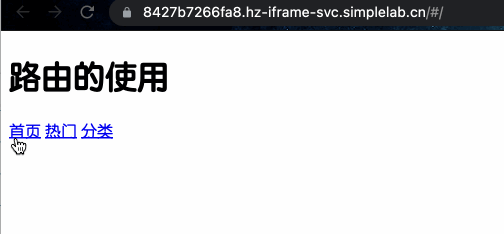

Vue
wget https://labfile.oss.aliyuncs.com/courses/1262/vue.min.js
工程化¶
计算、侦听与过滤器、生命周期钩子¶
- 计算属性
<body>
<div id="app">
<p>我名字正着写：{{name}}</p>
<!-- reverseName 计算属性 可以像绑定普通属性一样在模板中绑定计算属性-->
<p>计算出我名字倒着写：{{reverseName}}</p>
</div>
<script>
var app = new Vue({
el: "#app",
data: {
goodsList: {,
name: "实验楼",
},
computed: {
// reverseName 是一个计算属性
reverseName: function () {
return this.name.split("").reverse().join("");
},
},
// 一个只在内面挂载完毕，才开始执行的函数
mounted(){
axios.get('goodsList.json').then(val => {
this.goodsList = val.data;
})
}
});
</script>
</body>
生命周期函数是在特定时间点执行的函数，其中this的指向为vm或组件
当你的计算属性的依赖数据发生改变时，你的相关计算属性也会重新计算
set与get: 给this.计算属性赋值会自动调用计算属性.set
set:
<body>
<div id="app">
<p>firstName:{{firstName}}</p>
<p>lastName:{{lastName}}</p>
<p>全名是:{{fullName}}</p>
<button v-on:click="changeName">改姓</button>
</div>
<script>
var app = new Vue({
el: "#app",
data: {
firstName: "王",
lastName: "花花",
},
methods: {
// changeName 定义一个方法改变 计算属性 fullName 的值
changeName: function () {
// 修改计算属性 fullName 等于李花花
this.fullName = "李花花";
// 上面一句等于触发了 fullName 属性的 setter
},
},
computed: {
fullName: {
// getter
get: function () {
return this.firstName + this.lastName;
},
// setter 直接改变计算属性 fullName 的值就可以触发 setter this.fullName='XX'
set: function (newName) {
var name = newName;
this.firstName = name.slice(0, 1); // 取新值的第一个字符
this.lastName = name.slice(1); // 从新值的第二个字符开始取值
},
},
// 不需要set时，可简写：
fullname :function(){
return this.firstName + this.lastName;
}
// ES6中，如果属性值是函数，则可以省略`:function`, 如:
fullname(){
return this.firstName + this.lastName;
}
},
});
</script>
</body>
- 侦听属性
观察和响应 Vue 实例上的数据变动，侦听属性
监控msg，当msg改变是，调用对应的函数
<body>
<div id="app">
<p>{{msg}}</p>
<!-- v-on:click 简写为 @click -->
<button @click="handleClick('hello syl')">改变msg</button>
</div>
<script>
var app = new Vue({
el: "#app",
data: {
msg: "hello",
},
methods: {
// 改变 msg 的值
handleClick: function (val) {
this.msg = val;
},
},
// watch 监听属性
watch: {
// 监听新旧值 监听属性有两个参数，第一个新值，第二个旧值
msg: function (newVal, oldVal) {
alert("新值" + newVal + "----" + "旧值" + oldVal);
},
},
});
</script>
</body>
- 过滤器
在 Vue 中我们有一个专门处理数据过滤的东西：过滤器。过滤器可以用在两个地方：双花括号插值和 v-bind 表达式
<p>{{msg2|getString}}</p>
<p v-bind:class="msg2|getString"></p>
// 等价于：
<p v-bind:class="getstring(msg2)"></p>
<body>
<div id="app">
<!-- toUpperCase getString 为自定义的过滤器-->
<p>小写转换大写：过滤前：{{msg}} 过滤后： {{msg|toUpperCase}}</p>
<p>去除数字：过滤前：{{msg2}} 过滤后： {{msg2|getString}}</p>
</div>
<script>
var app = new Vue({
el: "#app",
data: {
msg: "hello",
msg2: "1s2y3l",
},
// filters 过滤器选项
filters: {
// toUpperCase 定义一个字符串转大写的过滤器
toUpperCase: function (val) {
return val.toUpperCase();
},
// getString 定义一个获取去除数字的过滤器
getString: function (val) {
let newVal = "";
val.split("").map(function (item) {
if (9 >= item && item >= 0) {
return;
} else {
return (newVal += item);
}
});
return newVal;
},
},
});
</script>
</body>
组件¶
简介¶
非单文件组件
<div id="app">
// 使用
<xuexiao></xuexiao>
</div>
<script src="https://cdn.jsdelivr.net/npm/vue/dist/vue.js"></script>
<script type="text/javascript">
// 创建
// const school = Vue.extend(options) 可简写为 const school = options
const school = Vue.extend({
template: `
<div>
<h2>学生姓名：{{studentName}} </h2>
<h2>学生年龄：{{age}} </h2>
</div>
`,// template会完全替换xuaxiao对象
data() {
return {
studentName: "张三",
age: 18,
};
},
});
const vm = new Vue({
el: "#app",
// (局部)注册
components: {
xuexiao: school,
//xuesheng: student,
},
});
</script>
单文件组件
<tempalte>
<div>
</div>
</tempalte>
<script>
export default {
name: '',
data() {
return {
schoolName: '',
address: ''
}
},
methods: {
showName() {
alert(this.showName)
}
},
}
</script>
<style>
div{
color: pink;
}
</style>
// main.js 入口文件
import App from './App'
new Vue({
el:'#root',
template: `<App></App>`,
components: {App},
})
- 全局组件：
Vue.component
<syl></syl>
Vue.component("syl", {
template: "<h1>实验楼全局组件</h1>",
});
- 局部组件
<body>
<div id="header">
<syl-header></syl-header>
</div>
<div id="mid">
<syl-mid></syl-mid>
</div>
<script>
// 头部组件
var childComponent = {
template: "<h2>我是实验楼局部组件header，只有我们父级才能调用</h2>",
};
// 中间部分组件
var childComponent2 = {
template: "<h2>我是实验楼局部组件mid，只有我们父级才能调用</h2>",
};
// header vm
var header = new Vue({
el: "#header",
// 子组件必须声明后使用，不然不能起效
components: {
"syl-header": childComponent,
},
});
var mid = new Vue({
el: "#mid",
// 子组件必须声明后使用，不然不能起效
components: {
"syl-mid": childComponent2,
},
});
</script>
</body>
组件的优点就在于能够复用，一次代码编写，整个项目受用。
注意： 复用组件内的 data 必须是一个函数，如果是一个对象（引用类型），组件与组件间会相互影响，组件数据不能独立管理
Vue.component("button-counter", {
// data 必须是一个函数不然会影响其他组件
data() {
return {
counter: 0,
};
},
template: '<button @click="counter++">{{counter}}</button>',
});
var app = new Vue({
el: "#app",
});
通信¶
父子：props
<body>
<div id="app">
<title-component post-title="syl1"></title-component>
<title-component post-title="syl2"></title-component>
<title-component post-title="syl3"></title-component>
</div>
<script>
// 注册一个 title 组件，通过传入不同的 title 值，渲染不同的东西
// 组件上 传递的 props 属性名为 kebab-case（短横线分隔命名）的要转换为驼峰命名
Vue.component("title-component", {
props: ["postTitle"], // post-title 转换为驼峰命名
template: "<p>{{postTitle}}</p>",
});
var app = new Vue({
el: "#app",
});
</script>
</body>
子父通信this.$emit('自定义事件名'，参数)
子组件向父组件数据传递套路：
第一步：子组件绑定事件。
第二步：子组件绑定事件触发，使用 $emit 创建自定义事件并传入需要传值给父组件的数据。
第三步：在子组件标签上 用 v-on 绑定自定义事件，在父组件中声明自定义事件处理的方法。
第四步：父组件方法，接受自定义事件传的参数，就完成了整个由下到上的数据流。
<body>
<div id="app">
<child-component v-on:send-msg="getMsg"></child-component>
</div>
<script>
// 定义一个子组件，template 绑定 click 事件
// 当 click 事件触发就使用 emit 自定义一个事件 send-msg，传入参数 “我是子组件请求与你通信”
// $emit('send-msg','我是子组件请求与你通信')
// 子组件标签上绑定自定义事件 send-msg，并绑定上父级的方法 getMsg，即可完成了子父组件通信
// <child-component v-on:send-msg="getMsg"></child-component>
Vue.component("child-component", {
template: `<button v-on:click="$emit('send-msg','我是子组件请求与你通信')">Click me</button>`,
});
var app = new Vue({
el: "#app",
methods: {
getMsg: function (msg) {
// 弹出子组件传递的信息
alert(msg);
},
},
});
</script>
</body>
props类型检测¶
通常你希望每个 prop 都有指定的值类型。这时，你可以以对象形式列出 prop，这些属性的名称和值分别是 prop 各自的名称和类型
<body>
<div id="app">
<child-component
id="1"
title="hello syl"
content="you are welcom"
></child-component>
</div>
<script>
// 注册一个子组件
Vue.component("child-component", {
// props 对象形式，传递属性值 进行类型检测，在脚手架环境中很有用
props: {
id: Number,
title: String,
content: String,
},
// 使用 es6 模板字符串书写格式更优美
template: `<div><p>id:{{id}}</p><p>title:{{title}}</p><p>content:{{content}}</p></div>`,
});
var app = new Vue({
el: "#app",
});
</script>
</body>
动态组件、实例生命周期¶
本地应用¶
示例¶
<script src="https://cdn.jsdelivr.net/npm/vue/dist/vue.js"></script>
<script type="text/javascript">
var vm = new Vue({
el: '#vue_det',
// 或 vm.$mount('#vue_det')
// 对象式：
data: {
site: "菜鸟教程",
url: "www.runoob.com",
alexa: "10000"
},
//函数式：
data(){
return {
site: "菜鸟教程",
}
}
methods: {
// 数据变化会触发Vue响应系统, 进而触发这个函数重新执行.
details: function() {
return this.site + " - 学的不仅是技术，更是梦想！";
}
}
})
</script>
- 初始化：向Vue构造函数中传入一个集合
-
el: 选择器，设置Vue实例挂载（管理）的元素
-
data: 插值数据 -
method: 方法 vm.sute可以这样用vm.$el,vm.$data它们都有前缀 $，以便与用户定义的属性区分开来
模板语法¶
插值¶
{{ name }}
name 为Vue中data的元素
v-html、v-text¶
用于替换为html代码
<div id="app2">
<div v-html="message"></div>
</div>
let app2 = new Vue({
el: '#app2',
data: {
message: '<h1>菜鸟教程</h1>'
}
})
v-on¶
- 绑定事件
<input v-on:click="doIt">
或：
<input @click="doIt(p1, p2)"> //自定义参数
或
<input @keyup.enter="sayHi"> //事件修饰符
let vm=Vue({
data:{
food: "西蓝花",
}
methods:{
doIt: function(p1, p2){
this.food
}
}
})
- 动态的事件：
@[event]='doIt'
event='click'
- 默认有冒泡，vue添加
.prevent可以阻止冒泡（阻止默认事件）
@click.p
- 六种事件修饰符：stop、prevent、capture、self、once和passive
键盘事件：
在监听键盘事件时，我们经常需要检查详细的按键。Vue 允许为 v-on 在监听键盘事件时添加按键修饰符
-
keyup.enter -
click.ctrl同时鼠标左击和按 ctrl 弹出提示 -
.exact精确按键修饰符，允许你控制由精确的系统修饰符组合触发的事件。 -
click.ctrl即使 Alt 或 Shift 被一同按下时也会触发 -
click.ctrl.exact有且只有 ctrl 键 + 鼠标左键 被按下的时候才触发 -
这些修饰符会限制处理函数仅响应特定的鼠标按钮。
-
.left -
.right -
.middle
v-show、v-if¶
根据表达式的真假，切换元素的显示和隐藏
v-show="isShow"
v-show="age>=18"
data:{
isShow: false,
age: 16
}
v-if: 同上，但操作dom元素（转换为注释节点），性能差
v-bind¶
单向数据绑定：v-bind
双向数据绑定：v-model
属性变量化
设置元素的属性(src, title, class)
可以多个
v-bind:src="imgSrc"
data:{
imgSrc=" "
}
v-bind: class="isActive ? 'active' : '' "
v-bind: class="{'active': isActive, 'red-bg': isRed}"
// active为构建好的类
data:{
isActive: true;
}
<div class='c' :class="['a', 'b']">
</div>
-
bind可以是数组 -
可以同时有动态否认和静态的
class
v-bind可以省略，如：
:src="imgSrc"
元素style绑定：
<body>
<div id="app">
<p v-bind:style="{fontSize:size,backgroundColor:bgColor}">你好，实验楼</p>
</div>
<script>
var app = new Vue({
el: "#app",
data: {
size: "26px",
bgColor: "pink",
},
});
</script>
</body>
v-for¶
<ul id="app">
<li v-for="(item, index) in arr">
{{index}} {{ item }}
</li>
</ul>
<script src="https://cdn.jsdelivr.net/npm/vue/dist/vue.js"></script>
<script>
var app=new Vue({
el:"#app",
data:{
arr:[1,2,3,4,5],
objArr:[
{name: 'jack'},
{name: 'rose'},
]
}
})
</script>
v-for一般和:key=''搭配使用
还是由于 JavaScript 的限制，Vue 不能检测对象属性的添加或删除，直接进行 app.userInfo.height='180cm' 这样操作是不会构成响应式，不会触发视图更新。必须使用 Vue.set(object, key, value) 方法向嵌套对象添加响应式属性
eg.
Vue.set(app.objArr, 'name', 'andy');
v-once¶
内容只渲染一次，不会改变
v-memo¶
<script setup lang="ts">
const arr:number[] = [1,2,3,4,5,6,7,8,9,10];
</script>
<template>
<div v-for="item in arr" v-mome="[item == 2]">
{{ item }}
</div>
</template>
<style scoped>
</style>
- 当
item!=2时，重新渲染
v-cloak¶
当vue初始化完成时，这个属性会直接消失
用例：
[v-cloak]{
display: none;
}
官方文档¶
组件基础¶
监听事件¶
子组件可以用$emit来抛出事件
<template>
<div class="blog-post">
<h4>{{ title }}</h4>
<span>{{ content }}</span>
<button @click="$emit('enlarge-text')">Rnlarge text</button>
</div>
</template>
<script setup lang='ts'>
defineProps(['title', 'content'])
defineEmits(['enlarge-text'])
</script>
<style scoped>
</style>
<template>
<div :style="{fontSize: postFontSize + 'em'}">
<BlogPost
v-for="post in posts"
:key="post.id"
:title="post.title"
@enlarge-text="postFontSize+=0.1">
</BlogPost>
</div>
</template>
<script setup lang='ts'>
import { ref } from 'vue';
import BlogPost from './components/BlogPost.vue';
const posts = ref([
{ id: 1, title: 'My journey with Vue' },
{ id: 2, title: 'Blogging with Vue' },
{ id: 3, title: 'Why Vue is so fun' }
])
const postFontSize=ref(1)
</script>
<style scoped>
</style>
描述：
- 子组件中，可以以
@click="$emit('enlarge-text')"这样的形式，把点击事件绑定到enlarge-text函数上（官方描述：子组件可以通过调用内置的$emit方法，通过传入事件名称来抛出一个事件。父组件有@enlarge-text监听，会完成这一事件的效果） - 在子组件中，需要使用
defineEmits宏来声明需要抛出的事件
深入组件¶
注册¶
全局注册¶
import {createApp} from 'vue'
const app=createApp({})
app.component(
'MyComponent',
{
// 实现
}
)
注册导入的单文件组件
import MyComponent from './App.vue'
app.component('MyComponent', MyComponent)
使用：
<!-- 这在当前应用的任意组件中都可用 -->
<ComponentA/>
<ComponentB/>
<ComponentC/>
局部注册¶
-
在使用
<script setup>的单文件组件中，导入的组件可以直接在模板中使用，无需注册 -
如果没有使用
<script setup>，则需要使用components选项来显式注册：
import ComponentA from './ComponentA.js'
export default {
components: {
ComponentA
},
setup() {
// ...
}
}
关于VueComponent：
1.school组件本质是一个名为VueComponent的构造函数，且不是程序员定义的，是Vue.extend生成的。*
2.我们只需要写
即Vue帮我们执行的：new VueComponent(options)。
3.特别注意：每次调用Vue.extend，返回的都是一个全新的VueComponent！！！！
4.关于this指向：
(1).组件配置中：
data函数、methods中的函数、watch中的函数、computed中的函数 它们的this均是【VueComponent实例对象】。
(2).new Vue(options)配置中：
data函数、methods中的函数、watch中的函数、computed中的函数 它们的this均是【Vue实例对象】。
5.VueComponent的实例对象，以后简称vc（也可称之为：组件实例对象）。
Vue的实例对象，以后简称vm。*

类.prototype === 对象.__proto__
他们指向同一个东西
尚硅谷¶
文档：https://v2.cn.vuejs.org/v2/guide/
个人笔记：
核心¶
挂载
<script>
new vue({
el: '#root',
data:{
name: '尚硅谷'
},
methods: {
func(){
// 这里this的指向是vm或者组件实例对象
}
},
})
</script>
或者：
<script>
let vm = new Vue({
data() {
return { name: "atguigu" };
},
});
vm.$mount("#root");
</script>
可以直接通过vm访问data的属性，这是因为data的所有属性都通过Object.defineProperty方法进行了*数据代理*，代理到了vm上
Object.defineProperty方法
<script type="text/javascript" >
let number = 18
let person = {
name:'张三',
sex:'男',
}
Object.defineProperty(person,'age',{
// value:18,
// enumerable:true, //控制属性是否可以枚举，默认值是false
// writable:true, //控制属性是否可以被修改，默认值是false
// configurable:true //控制属性是否可以被删除，默认值是false
//当有人读取person的age属性时，get函数(getter)就会被调用，且返回值就是age的值
get(){
console.log('有人读取age属性了')
return number
},
//当有人修改person的age属性时，set函数(setter)就会被调用，且会收到修改的具体值
set(value){
console.log('有人修改了age属性，且值是',value)
number = value
}
})
<script/>
计算属性¶
<script type="text/javascript">
Vue.config.productionTip = false //阻止 vue 在启动时生成生产提示。
const vm = new Vue({
el:'#root',
data:{
firstName:'张',
lastName:'三',
x:'你好'
},
computed:{
fullName:{
//get有什么作用？当有人读取fullName时，get就会被调用，且返回值就作为fullName的值
//get什么时候调用？1.初次读取fullName时。2.所依赖的数据发生变化时。
get(){
console.log('get被调用了')
// console.log(this) //此处的this是vm
return this.firstName + '-' + this.lastName
},
// //set什么时候调用? 当fullName被修改时。
set(value){
console.log('set',value)
const arr = value.split('-')
this.firstName = arr[0]
this.lastName = arr[1]
}
}
}
})
</script>
setter：这个函数会在fullName被修改的时候执行。如果计算属性要被修改，那必须写set函数去响应修改，且set中要引起计算时依赖的数据发生改变（如修改firstName和lastName）。getter：fullName以来的数据发生变化时被调用
计算属性可以只写getter：
computed:{
fullName2() {
return this.firstName + "-" + this.lastName;
},
}
监视属性¶
首先指定要监视的值，当这个值放生改变时，会自动执行指定的函数
<!DOCTYPE html>
<html lang="en">
<head>
<meta charset="UTF-8" />
<meta name="viewport" content="width=device-width, initial-scale=1.0" />
<title>Document</title>
</head>
<body>
<div id="app">
<div>今天天气{{ val }}</div>
<button @click="change">change</button>
</div>
<script src="../js/vue.js"></script>
<script>
const vm = new Vue({
el: "#app",
data: {
flag: true,
},
computed: {
val() {
return this.flag ? "炎热" : "凉爽";
},
},
methods: {
change() {
this.flag = !this.flag;
},
},
watch: {
flag: {
immediate: true,
deep: true,
handler(newVal, oldVal) {
console.log("修改了!");
},
},
},
});
</script>
</body>
</html>
简写：
watch: {
flag(newVal, oldVal) {
console.log("修改了!");
},
},
有的功能，watch可以完成，但computed不一定能完成
-
所被Vue管理的函数，最好写成普通函数，这样this的指向才是vm 或 组件实例对象。
-
所有不被Vue所管理的函数（定时器的回调函数、ajax的回调函数等、Promise的回调函数），最好写成箭头函数，这样this的指向才是vm 或 组件实例对象。
添加一个属性¶
Vue.set(this.student, 'sex', '男')
过滤属性¶
要用到管道运算符
<html>
<div> {{111111 | timeFormater}} </div>
</html>
<script>
new Vue({
filters: {
timeFormater(time) {
return time / 1000;
},
},
})
</script>
自定义指令¶
函数式：
<!DOCTYPE html>
<html lang="en">
<head>
<meta charset="UTF-8" />
<meta name="viewport" content="width=device-width, initial-scale=1.0" />
<title>Document</title>
</head>
<body>
<div id="app">
大大大：
<span v-big="n"></span>
</div>
</body>
<script src="../js/vue.js"></script>
<script>
new Vue({
el: "#app",
data: {
n: 99,
},
directives: {
big(element, binding) {
element.innerText=binding.value *10
},
},
});
</script>
</html>
big 函数调用时机：
- 指令与元素成功绑定时（一上来）
- 指令所在的模块被重新解析时
对象式：
directives:{
fbind:{
//指令与元素成功绑定时（一上来）
bind(element,binding){
element.value = binding.value
},
//指令所在元素被插入页面时
inserted(element,binding){
element.focus()
},
//指令所在的模板被重新解析时
update(element,binding){
element.value = binding.value
}
}
}
全局指令：
Vue.directive('fbind',{
//指令与元素成功绑定时（一上来）
bind(element,binding){
element.value = binding.value
},
//指令所在元素被插入页面时
inserted(element,binding){
element.focus()
},
//指令所在的模板被重新解析时
update(element,binding){
element.value = binding.value
}
})
组件基础¶
创建组件¶
<!DOCTYPE html>
<html lang="en">
<head>
<meta charset="UTF-8">
<meta name="viewport" content="width=device-width, initial-scale=1.0">
<title>Document</title>
</head>
<body>
<div id="root">
<school></school>
<hr>
<stu></stu>
</div>
</body>
<script src="../js/vue.js"></script>
<script>
const school = Vue.extend({
template:`
<div>
<div>姓名：{{name}}</div>
<div>地址：{{address}}</div>
</div>
`,
data(){
return {
name: '阿巴阿巴',
address: '唐宁街一号',
}
}
})
const stu = Vue.extend({
template:`
<div>
<div>姓名：{{name}}</div>
<div>性别：{{sex}}</div>
</div>
`,
data(){
return {
name: '张三',
sex: '男',
}
}
})
const vm = new Vue({
el:'#root',
// 局部注册
components:{
school,
stu
}
})
</script>
</html>
组件需要复用，故data应写成函数，并把数据包裹在返回值中
全局组件
const hello = Vue.extend({
name: '我是hello', // 指定在开发者工具中的名字
template:`<div>{{ hello }}</div>`,
data(){
return {
hello: 'hello'
}
}
})
Vue.component('hello', hello)
const hello = Vue.extend({})可以简写为：const hello = {}
props¶
父组件：
<template>
<div>
<StudentCom name="张三" sex="男" age="18"></StudentCom>
</div>
</template>
<script>
import StudentCom from './components/StudentCom.vue'
export default {
name: 'App',
components: {
StudentCom
}
}
</script>
<style>
</style>
子组件
<template>
<div>
<h1>{{ msg }}</h1>
<h2>学生姓名：{{ name }}</h2>
<h2>学生性别：{{ sex }}</h2>
<h2>学生年龄：{{ age }}</h2>
</div>
</template>
<script>
export default {
name: 'StudentCom',
data() {
return {
msg:'我是一个普通的学生'
}
},
props: ['name', 'age', 'sex']
}
</script>
<style>
</style>
上面父组件的传参写法中，传出的只能是字符串，
<StudentCom :name="张三" :sex="男" :age="18"></StudentCom>
这样，传出去的是表达式
对于子组件，这些数据是**只读**的
mixin¶
<template>
<div>
<h1>{{ msg }}</h1>
<h2>学生姓名：{{ name }}</h2>
<h2>学生性别：{{ sex }}</h2>
<h2>学生年龄：{{ age }}</h2>
<button @click="showName">点击展示姓名</button>
</div>
</template>
<script>
import {hunhe} from '../minin.js'
export default {
name: 'StudentCom',
data() {
return {
msg:'我是一个普通的学生'
}
},
mixins:[hunhe],
}
</script>
<style>
</style>
// mixin.js
export const hunhe = {
methods: {
showName() {
alert(this.msg)
}
},
mounted(){
console.log('泥嚎呀')
}
}
完成属性的复用
全局混合：
// main.js
Vue.mixin(hunhe)
插件¶
定义：
// src/plugins.js
export default {
install(Vue,x,y,z){
console.log(x,y,z)
//全局过滤器
Vue.filter('mySlice',function(value){
return value.slice(0,4)
})
//定义全局指令
Vue.directive('fbind',{
//指令与元素成功绑定时（一上来）
bind(element,binding){
element.value = binding.value
},
//指令所在元素被插入页面时
inserted(element,binding){
element.focus()
},
//指令所在的模板被重新解析时
update(element,binding){
element.value = binding.value
}
})
//定义混入
Vue.mixin({
data() {
return {
x:100,
y:200
}
},
})
//给Vue原型上添加一个方法（vm和vc就都能用了）
Vue.prototype.hello = ()=>{alert('你好啊')}
}
}
使用：
import plugins from './plugins'
Vue.use(plugins, 1, 2, 3)
传参¶
父：
<template>
<div id="root">
<div class="todo-container">
<div class="todo-wrap">
<MyHeader :addTodo="addTodo" />
<MyList :todos="todos" :deleteTodo="deleteTodo" :checkTodo="checkTodo" />
<MyFooter :todos="todos" :changeDone="changeDone" :clearAll="clearAll"/>
</div>
</div>
</div>
</template>
<script>
import MyHeader from './components/MyHeader.vue';
import MyList from "./components/MyList.vue";
import MyFooter from './components/MyFooter.vue';
export default {
name: 'App',
data() {
return {
todos: [
{ id: '001', title: '抽烟', done: true },
{ id: '002', title: '喝酒', done: false },
{ id: '003', title: '烫头', done: true },
],
}
},
methods: {
addTodo(todo) {
this.todos.unshift(todo)
},
checkTodo(id) {
this.todos.forEach((obj) => {
if (obj.id === id) obj.done = !obj.done
})
},
deleteTodo(id) {
// this.todos.splice(this.todos.forEach(todo => todo.id === id), 1)
this.todos = this.todos.filter(obj => obj.id !== id)
},
changeDone(done) {
this.todos.forEach(obj => { obj.done = done })
},
clearAll() {
this.todos = this.todos.filter(obj => !obj.done)
}
},
components: {
MyHeader,
MyList,
MyFooter,
}
}
</script>
子：
<template>
<div class="todo-footer" v-show="numTodo">
<label>
<input type="checkbox" v-model="isAll"/>
</label>
<span>
<span>已完成{{ doneTodo }} </span> / 全部{{ numTodo }}
</span>
<button class="btn btn-danger" @click="claerAllDone">清除已完成任务</button>
</div>
</template>
<script>
export default {
name: 'MyFooter',
props: ['todos', 'changeDone', 'clearAll'],
methods: {
claerAllDone() {
this.clearAll()
}
},
computed: {
isAll: {
get() {
return this.doneTodo === this.numTodo && this.numTodo
},
set(value) {
this.changeDone(value)
}
},
numTodo() {
return this.todos.length
},
doneTodo() {
// return this.todos.filter(obj=>obj.done).length
// console.log(this.todos.reduce((pre, now) => { pre + (now.done ? 1 : 0) }, 1));
return this.todos.reduce((pre, now) => pre + (now.done ? 1 : 0), 0)
},
}
}
</script>
$emit传参¶
自定义事件
父App.vue
<template>
<aSchool @atguigu="demo"/>
</template>
<script>
import aSchool from './components/aSchool.vue'
export default {
name: 'App',
data(){
return{
msg:'泥嚎',
}
},
methods: {
demo(name) {
console.log('传过来了: ', name);
}
},
components: {
aSchool,
}
}
</script>
<style>
</style>
子：aSchool.vue
<template>
<div>
<div>学校名称{{ name }}</div>
<div>学校地址{{ address }}</div>
<button @click="send">发送</button>
<button @click="revoke">取消</button>
</div>
</template>
<script>
export default {
name: 'aSchool',
data() {
return {
name: '张飒',
address:'纽约'
}
},
methods: {
send() {
this.$emit('atguigu', this.name)
},
// 解绑
revoke() {
this.$off('atguigu')
}
}
}
</script>
<style></style>
总线¶
适用于任意组件之间通信
- 安装：
// main.js
new Vue({
beforeCreate(){
Vue.prototype.$bus=this
},
......
})
-
使用：
-
接收数据
methods(){ demo(data){......} } mounted(){ this.$bus.$on('xxx', this.demo) } -
提供数据：
this.$bus.$emit('xxx', 数据) -
销毁：在
beforeDestroy中用$off解绑当前组件所用到的事件
消息订阅与发布¶
使用pubsub-js库
任意组件之间调用函数
<template>
<div>
<div>学校名称{{ name }}</div>
<div>学校地址{{ address }}</div>
<button @click="send">发送</button>
<button @click="revoke">取消</button>
</div>
</template>
<script>
import pubsub from 'pubsub-js'
export default {
name: 'aSchool',
data() {
return {
name: '张飒',
address:'纽约'
}
},
methods: {
send() {
this.$emit('atguigu', this.name)
},
// 解绑
revoke() {
this.$off('atguigu')
}
},
mounted() {
this.pubId= pubsub.subscribe('hello', function (num,a) {
console.log('发出了订阅请求', num,a);
})
},
beforeDestroy() {
pubsub.unsubscribe(this.pubId)
}
}
</script>
<style></style>
<template>
<div>
<div>学校名称{{ name }}</div>
<div>学校地址{{ address }}</div>
<button @click="send">发送</button>
<button @click="revoke">取消</button>
<button @click="sendPub">发布</button>
</div>
</template>
<script>
import pubsub from 'pubsub-js'
export default {
name: 'aSchool',
data() {
return {
name: '张飒',
address:'纽约'
}
},
methods: {
send() {
this.$emit('atguigu', this.name)
},
// 解绑
revoke() {
this.$off('atguigu')
},
sendPub() {
pubsub.publish('hello', 666)
}
},
}
</script>
<style></style>
$nextTick¶
- 语法：
this.$nextTick(回调函数) - 作用：在下一次DOM更新结束后执行其指定的回调
- 什么时候用：当改变数据后，要基于更新后的新DOM进行某些操作时，要在
nextTick所指定的回调函数中执行
this.$nextTick(function(){
this.$refs.inputT
})
动画¶
1¶
<template>
<div>
<button @click="isShow = !isShow">显示/隐藏</button>
<transition name="hello" appear>
<h1 v-show="isShow">你好啊！</h1>
</transition>
</div>
</template>
<script>
export default {
name:'MyTest',
data() {
return {
isShow:true
}
},
}
</script>
<style scoped>
h1{
background-color: orange;
}
.hello-enter-active{
animation: atguigu 0.5s linear;
}
.hello-leave-active{
animation: atguigu 0.5s linear reverse;
}
@keyframes atguigu {
from{
transform: translateX(-100%);
}
to{
transform: translateX(0px);
}
}
</style>
2¶
<template>
<div>
<button @click="isShow = !isShow">显示/隐藏</button>
<transition-group name="hello" appear>
<h1 v-show="!isShow" key="1">你好啊！</h1>
<h1 v-show="isShow" key="2">尚硅谷！</h1>
</transition-group>
</div>
</template>
<script>
export default {
name:'MyTest',
data() {
return {
isShow:true
}
},
}
</script>
<style scoped>
h1{
background-color: orange;
}
/* 进入的起点、离开的终点 */
.hello-enter,.hello-leave-to{
transform: translateX(-100%);
}
.hello-enter-active,.hello-leave-active{
transition: 0.5s linear;
}
/* 进入的终点、离开的起点 */
.hello-enter-to,.hello-leave{
transform: translateX(0);
}
</style>
- 离开时触发：
v-leave, v-leave-active, v-leave-to
- 进入时触发：
v-enter, v-enter-active, v-enter-to
Vuex¶
基础¶
./src/store/index.js
import Vue from "vue";
import Vuex from "vuex";
Vue.use(Vuex);
const actions = {
// add(context, value) {
// context.commit("ADD", value);
// },
// subtract(context, value) {
// context.commit("SUBTRACT", value);
// },
addOdd(context, value) {
console.log("context: ", context);
if (context.state.sum % 2) context.commit("ADD", value);
},
addWait(context, value) {
setTimeout(() => {
context.commit("ADD", value);
}, 500);
},
};
const mutations = {
ADD(state, value) {
state.sum += value;
},
SUBTRACT(state, value) {
state.sum -= value;
},
};
const state = {
sum: 0,
};
const getters = {
bigSum(state) {
return state.sum * 10;
},
};
export default new Vuex.Store({
actions,
mutations,
state,
getters,
});
./src/main.js
import Vue from 'vue'
import App from './App.vue'
Vue.config.productionTip = false
import store from './store';
new Vue({
render: h => h(App),
store,
}).$mount('#app')
./src/App.vue
<template>
<div>
<MyCount></MyCount>
</div>
</template>
<script>
import MyCount from './components/MyCount.vue';
export default {
name: 'App',
components: {
MyCount,
}
}
</script>
<style>
button {
margin-left: 10px;
}
</style>
./src/components/MyCount.vue
<template>
<div>
<h1>当前求和为：{{ $store.state.sum }}</h1>
<h2>他的十倍为：{{ $store.getters.bigSum }}</h2>
<select v-model.number="n">
<option value="1">1</option>
<option value="2">2</option>
<option value="3">3</option>
</select>
<button @click="increment">+</button>
<button @click="decrement">-</button>
<button @click="incrementOdd">当前求和为奇数再加</button>
<button @click="incrementWait">等一等再加</button>
</div>
</template>
<script>
export default {
name: 'MyCount',
data() {
return {
n: 1,
}
},
methods: {
increment() {
console.log("this: ", this);
this.$store.commit('ADD', this.n)
},
decrement() {
this.$store.commit('SUBTRACT', this.n)
},
incrementOdd() {
this.$store.dispatch('addOdd', this.n)
},
incrementWait() {
this.$store.dispatch('addWait', this.n)
},
}
}
</script>
<style></style>
一个更轻松的写法，定义别名：
<template>
<div>
<h1>当前求和为：{{ $store.state.sum }}</h1>
<h2>他的十倍为：{{ $store.getters.bigSum }}</h2>
<select v-model.number="n">
<option value="1">1</option>
<option value="2">2</option>
<option value="3">3</option>
</select>
<button @click="increment">+</button>
<button @click="decrement">-</button>
<button @click="incrementOdd">当前求和为奇数再加</button>
<button @click="incrementWait">等一等再加</button>
<hr>
<div>{{ he }}, {{ xuexiao }}, {{ kemu }}, {{ shibei }}</div>
<div>{{ sum}}, {{ school }}, {{ subject }}, {{ bigSum }}</div>
</div>
</template>
<script>
import {mapState, mapGetters} from 'vuex'
export default {
name: 'MyCount',
data() {
return {
n: 1,
}
},
computed: {
...mapState({ he: 'sum', xuexiao: 'school', kemu: 'subject' }),
...mapState(['sum', 'school', 'subject']),
...mapGetters({shibei:'bigSum'}),
...mapGetters(['shibei']),
},
methods: {
increment() {
console.log("this: ", this);
this.$store.commit('ADD', this.n)
},
decrement() {
this.$store.commit('SUBTRACT', this.n)
},
incrementOdd() {
this.$store.dispatch('addOdd', this.n)
},
incrementWait() {
this.$store.dispatch('addWait', this.n)
},
}
}
</script>
<style></style>
Mutations和Actions也可以映射：
<template>
<div>
<h1>当前求和为：{{ $store.state.sum }}</h1>
<h2>他的十倍为：{{ $store.getters.bigSum }}</h2>
<select v-model.number="n">
<option value="1">1</option>
<option value="2">2</option>
<option value="3">3</option>
</select>
<button @click="increment(n)">+</button>
<button @click="decrement(n)">-</button>
<button @click="incrementOdd(n)">当前求和为奇数再加</button>
<button @click="incrementWait(n)">等一等再加</button>
<hr>
<div>{{ he }}, {{ xuexiao }}, {{ kemu }}, {{ shibei }}</div>
<div>{{ sum}}, {{ school }}, {{ subject }}, {{ bigSum }}</div>
</div>
</template>
<script>
import {mapState, mapGetters, mapActions, mapMutations} from 'vuex'
export default {
name: 'MyCount',
data() {
return {
n: 1,
}
},
computed: {
...mapState({ he: 'sum', xuexiao: 'school', kemu: 'subject' }),
...mapState(['sum', 'school', 'subject']),
...mapGetters({shibei:'bigSum'}),
...mapGetters(['bigSum']),
},
methods: {
...mapMutations({increment:'ADD', decrement:'SUBTRACT'}),
...mapActions({ incrementOdd: 'addOdd', incrementWait: 'addWait' })
// increment() {
// console.log("this: ", this);
// this.$store.commit('ADD', this.n)
// },
// decrement() {
// this.$store.commit('SUBTRACT', this.n)
// },
// incrementOdd() {
// this.$store.dispatch('addOdd', this.n)
// },
// incrementWait() {
// this.$store.dispatch('addWait', this.n)
// },
}
}
</script>
<style></style>
蓝桥¶
引入：
<script src="https://unpkg.com/vuex"></script>
<script>
// 导入Vuex包
import Vuex from 'vuex'
Vue.use(Vuex)
//创建store对象
const store = new Vuex.Store({
// store中存放的就是全局共享的数据
state: {count: 0},
})
new Vue({
el:'#app',
render: h=>h(app),//渲染app和组件
router,//挂载路由
// 将创建的共享数据对象，挂载到Vue实例中
// 所有的组件，就可以直接总store中获取全局的数据
store
})
</script>
在一个模块化的打包系统中，我们必须显式地通过 Vue.use() 来安装 Vuex：
import Vue from "vue";
import Vuex from "vuex";
Vue.use(Vuex);
Vuex 中有五个核心概念，它们分别是 State、Getters、Mutations、Actions 和 Modules。
首先，在 main.js 文件中写入以下代码：
import Vue from "vue";
import App from "./App.vue";
import Vuex from "vuex"; // 导入 Vuex
Vue.use(Vuex); // 使用 Vuex，让 Vuex 可以访问到 Vue
Vue.config.productionTip = false;
// 创建 Store 实例
const store = new Vuex.Store({
state: {
count: 0, // 计数器的初始值
},
});
new Vue({
store, // 注入 Store
render: (h) => h(App),
}).$mount("#app");
有同学可能会问：为啥不叫 vuex 而是 store 呢？🤔
这是因为，Vuex 应用的核心就是 store（仓库）。它是一个用于存储组件共享状态（state）的容器，就像一个小型的数据仓库。它所有的功能和操作都是用于处理这个仓库中的状态而存在的，所以我们在创建 Vuex 配置的时候都是以 store 命名。
接下来，我们在 App.vue 中将计数器的状态展示出来，在文件中写入以下代码。
<template>
<div id="app">{{count}}</div>
</template>
<script>
export default {
name: "App",
// 通过计算属性来访问 count
computed: {
count() {
return this.$store.state.count;
},
},
};
</script>
来这里我们就可以在页面上访问到 count 的数据了，当前页面会显示 0。
接下来，我们要实现点击按钮计数的功能，每点一次按钮数据 +1。
在 App.vue 文件中定义一个按钮，新增代码如下：
<!--绑定一个点击事件，用 increment 来执行 count++ 的逻辑-->
<button @click="$store.commit('increment')">++</button>
我们在 main.js 文件中增加 mutations，代码如下：
const store = new Vuex.Store({
// 此处省略 ...
mutations: {
increment(state) {
state.count++; // 执行 count++ 的操作
},
},
});
计数器的功能就实现啦～ 🎉 效果如下：

到此我们已经实现了一个最简单的 Vuex 状态管理，从上面的使用我们可以看出 state 就是用来存储和初始化状态。
通过上面简单的示例，我们知道了 Vuex 主要是用来存储并管理组件共享状态的。
有时候我们需要向后台发出一些异步请求，我们不能直接在 mutations 里进行操作，这时就可以在 actions 中定义一些异步操作。
下面我们来模拟一下异步操作，在页面上新增一个按钮，触发 count-- 的操作。在 App.vue 中新增以下代码：
<button @click="$store.dispatch('decrement')">--</button>
注意哦！！！ Actions 是通过
store.dispatch方法来触发actions更新state状态。
在 main.js 文件中新增以下内容。
const store = new Vuex.Store({
mutations: {
decrement(state) {
state.count--;
},
},
actions: {
decrement({ commit }) {
setTimeout(() => {
// 通过 commit 交给 mutations 去处理
commit("decrement");
}, 500);
},
},
});
到这里我们 count-- 的功能也实现了，效果如下：

actions 与 mutations 的区别
actions 类似于 mutations，不同的是：
actions中的更新函数最终仍是通过调用mutations中的函数来更新状态的，不能通过它直接变更状态。- 与
mutations不同，actions中可以包含任意异步操作。
关于 mutations、actions 等的用法还有其它形式，这些在官网上都有详细的 API，大家可以根据官网 API 对它们进行更多更深入的了解，这里就不再一一细说了。
getters 可以帮助我们缓存数据。
我们增加一个每次计数增加两倍的功能，在 main.js 中新增以下代码：
getters: {
doubleCount(state) {
return state.count * 2
}
}
然后在页面上获取数据，在 App 文件中新增以下代码：
{{$store.getters.doubleCount}}
这样，当点击 ++ 按钮时，计数会以乘 2 的形式增加。效果如下：
你不能直接改变 store 中的状态。改变 store 中的状态的唯一途径就是显式地**提交 (commit) mutation**
import { createApp } from 'vue'
import { createStore } from 'vuex'
// 创建一个新的 store 实例
const store = createStore({
state () {
return {
count: 0
}
},
mutations: {
increment (state) {
state.count++
}
}
})
const app = createApp({ /* 根组件 */ })
// 将 store 实例作为插件安装
app.use(store)
现在，你可以通过 store.state 来获取状态对象，并通过 store.commit 方法触发状态变更：
store.commit('increment')
console.log(store.state.count) // -> 1
在 Vue 组件中， 可以通过 this.$store 访问store实例。现在我们可以从组件的方法提交一个变更：
methods: {
increment() {
this.$store.commit('increment')
console.log(this.$store.state.count)
}
}
组件之间共享数据的方式
- 父向子传值：
v-bind属性绑定 - 子向父传值：
v-on事件绑定 - 兄弟组件之间共享数据：
EventBus $on接收数据的那个组件$emit发送数据的按个组件
State¶
State提供唯一的数据源，所有的共享数据都要放到state中
const store = new Vuex.Store({
state: {count: 0,},
})
组件访问state中数据：
this.$store.state.全局数据名称template实例中可以省掉this


路由¶
基础¶
普通跳转：
<li><a href="javascript:;" @click="$router.push('/login')">请先登录</a></li>
./src/router/index.js
// 该文件专门用于创建整个应用的路由器
import VueRouter from "vue-router";
//引入组件
import MyAbout from "../pages/MyAbout";
import MyHome from "../pages/MyHome";
import MyNews from "../pages/MyNews.vue";
import MyMessage from "../pages/MyMessage.vue";
//创建并暴露一个路由器
export default new VueRouter({
routes: [
{
bane:'guanyu'
path: "/about",
component: MyAbout,
},
{
path: "/home",
component: MyHome,
children: [
{
path: "news",
component: MyNews,
},
{
path: "message",
component: MyMessage,
},
],
},
],
});
./src/main.js
import Vue from 'vue'
import App from './App.vue'
import router from "./router";
import VueRouter from 'vue-router';
Vue.config.productionTip = false
Vue.use(VueRouter)
new Vue({
render: (h) => h(App),
router: router,
}).$mount("#app");
./src/pages/Myhome.vue
<template>
<div>
<h2>Home组件内容</h2>
<div>
<ul class="nav nav-tabs">
<li>
<router-link class="list-group-item" active-class="active" to="/home/news">News</router-link>
</li>
<li>
<router-link class="list-group-item" active-class="active" to="/home/message">Message</router-link>
</li>
</ul>
<ul>
<router-view></router-view>
</ul>
</div>
</div>
</template>
<script>
import { RouterView } from 'vue-router';
export default {
name: 'MyHome',
components: { RouterView }
}
</script>
router-view用于渲染url匹配的子组件router-link可以当做a标签，其中的to指明了跳转目标
只有在setup语法糖中才能使用useRouter()，其他地方可以这样：
import router from '@/router';
router/index.js中：
const router = createRouter({......})
export default router
这与下面的效果相同：
<script setup>
import { useRouter } from 'vue-router'
const router = useRouter()
</script>
query参数¶
发送：
<router-link :to="{
path:'/home/message/detail',
query:{
id:m.id,
title:m.title
}
}"></router-link>
接收：
<template>
<ul>
<li>消息编号：{{ $route.query.id }}</li>
<li>消息标题：{{ $route.query.title }}</li>
</ul>
</template>
<script>
export default {
name: 'MyDetail',
mounted() {
console.log(this.$route)
},
}
</script>
params参数¶
router/index.js
{
name: "xiangxi",
path: "detail/:id/:title",
component: MyDetail,
},
使用：
<router-link :to="{
// path:'/home/message/detail',
name: 'xiangxi',
params: {
id: m.id,
title: m.title
}
}">{{ m.title }}</router-link>
读取：
{{ $route.params.id }}


$route是 Vue.js 中一个特殊的变量，它代表当前的路由状态- this.$router.push(path): 相当于点击路由链接(可以返回到当前路由界面)
- this.$router.replace(path): 用新路由替换当前路由(不可以返回到当前路由界面)
- this.$router.back(): 请求(返回)上一个记录路由
- this.$router.go(-1): 请求(返回)上一个记录路由
- this.$router.go(1): 请求下一个记录路由
缓存: keep-alive¶
<keep-alive :include="['MyNews', 'MyMessage']">
<router-view></router-view>
</keep-alive>
新的生命周期：
activated() {
console.log('News组件被激活了')
this.timer = setInterval(() => {
console.log('@')
this.opacity -= 0.01
if(this.opacity <= 0) this.opacity = 1
},16)
},
deactivated() {
console.log('News组件失活了')
clearInterval(this.timer)
},
路由守卫¶
对路由进行权限控制
全局守卫¶
// 全局前置守卫：初始化时、每次路由切换前执行
router.beforeEach((to,from,next) => {
console.log('beforeEach',to,from)
if(to.meta.isAuth){ // 判断当前路由是否需要进行权限控制
if(localStorage.getItem('school') === 'atguigu'){ // 权限控制的具体规则
next() // 放行
}else{
alert('暂无权限查看')
}
}else{
next() // 放行
}
})
// 全局后置守卫：初始化时、每次路由切换后执行
router.afterEach((to,from) => {
console.log('afterEach',to,from)
if(to.meta.title){
document.title = to.meta.title //修改网页的title
}else{
document.title = 'vue_test'
}
})
独享守卫¶
beforeEnter(to,from,next){
console.log('beforeEnter',to,from)
if(localStorage.getItem('school') === 'atguigu'){
next()
}else{
alert('暂无权限查看')
}
}
组件内守卫¶
使用带有参数的路由时需要注意的是，当用户从/users/johnny导航到/users/jolyne时，相同的组件实例将被重复使用
因为两个路由都渲染同个组件，比起销毁再创建，复用则显得更加高效。不过，这也意味着**组件的生命周期钩子不会被调用**。
//进入守卫：通过路由规则，进入该组件时被调用
beforeRouteEnter (to, from, next) {... next()},
//离开守卫：通过路由规则，离开该组件时被调用
beforeRouteLeave (to, from, next) {... next()},
蓝桥¶
引入：
https://unpkg.com/vue-router@2.0.0/dist/vue-router.js
我们通过一个单页面应用来看看 Vue-Router 的使用，其基本步骤如下所示：
- 使用
router-link组件来导航，其通过to属性来指定跳转链接（这相当于 HTML 中的 a 标签）。 - 使用
router-view组件定义路由出口，路由匹配到的组件将会渲染到此处。 - 使用
const routes = [{ path, component }]来定义路由（路径和组件名）。 - 使用
const router = new VueRouter({})来创建路由实例，在其中传入上一步定义的路由配置routes。 - 创建和挂载根实例，在
new Vue中挂载上一步创建的路由实例router。
步骤清楚了，我们来举个例子吧～
使用以下命令获取 Vue 和 Vue-Router 文件。
wget https://labfile.oss.aliyuncs.com/courses/10532/vue-router.js
新建一个 index.html 文件，在文件中写入以下内容：
<!DOCTYPE html>
<html lang="en">
<head>
<meta charset="UTF-8" />
<meta http-equiv="X-UA-Compatible" content="IE=edge" />
<meta name="viewport" content="width=device-width, initial-scale=1.0" />
<title>Document</title>
<script src="vue.min.js"></script>
<script src="vue-router.js"></script>
</head>
<body>
<div id="app">
<h1>路由的使用</h1>
<p>
<!-- 使用 router-link 组件来导航 -->
<router-link to="/home">首页</router-link>
<router-link to="/hot">热门</router-link>
<router-link to="/class">分类</router-link>
</p>
<!-- 路由出口 -->
<!-- 路由匹配到的组件将渲染在这里 -->
<router-view></router-view>
</div>
<script>
const Home = { template: "<div>首页</div>" };
const Hot = { template: "<div>热门</div>" };
const Class = { template: "<div>分类</div>" };
// 定义路由
const routes = [
{ path: "/home", component: Home },
{ path: "/hot", component: Hot },
{ path: "/class", component: Class },
];
// 创建 router 实例，然后传 routes 配置
const router = new VueRouter({
routes,
});
// 创建和挂载根实例
const app = new Vue({
router,
}).$mount("#app");
</script>
</body>
</html>
效果如下所示：
